Walk into a kitchen and what do you actually notice first? The cabinets, maybe the backsplash, possibly just the smell of last night's dinner still lingering. None of that matters much if the layout underneath it all doesn't work. Gorgeous countertops get wasted in cramped, awkward floor plans constantly, while plain finishes in a smart layout can feel like an absolute gem.
A good layout changes how you actually live and cook in a space, and it almost always starts with the floor plan, not the fixtures. The good news is you don't need to reinvent anything. Certain layouts have held up for decades because they simply work, no matter what's trending in cabinet colors that year.
Here are ten of them, each with its own strengths and a few quirks worth knowing before you commit.

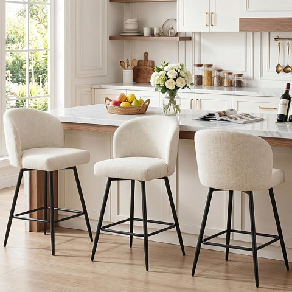
Counter Height Bar Stools Set of 3, 360 Degree Swivel Upholstered Barstools with Backs
Shop on Amazon10 Kitchen Layouts Worth Considering
1. The Zone-Style Kitchen
Instead of relying on the classic kitchen triangle, a zone-style layout splits the space into distinct activity areas, cooking, prepping, cleaning, storage, socializing.
It shines in larger kitchens where more than one person is using the space at once. One person can bake while another handles dinner, and neither one is constantly stepping around the other.
It needs real square footage to work, but if you have it, this layout feels genuinely forward-thinking without ever reading as trendy.
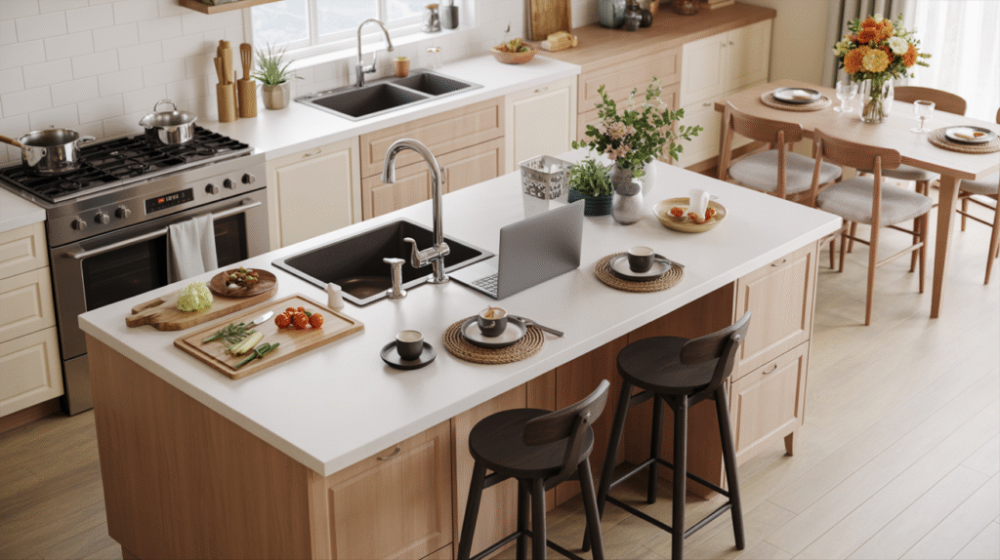
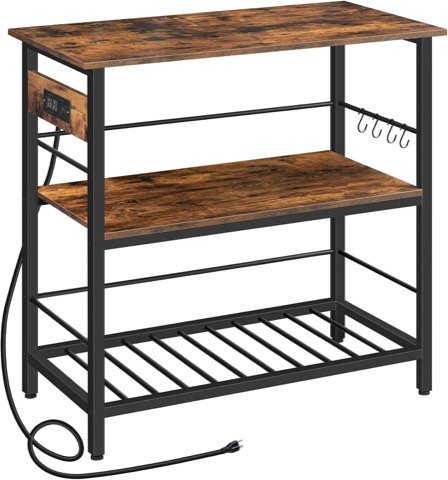
HOOBRO Kitchen Island with Storage and Power Outlet, 3 Tier Coffee Station
Shop on Amazon2. The Modular Kitchen
Modular kitchens trade fixed layouts for pre-designed units, cabinets, shelving, appliances, that can be arranged and rearranged however suits the space.
That adaptability is exactly what makes this one timeless. You can adjust as your needs change without a full remodel, which matters more than it sounds like it should. A young couple can start simple and expand the setup as life gets busier.
It's essentially building blocks for grown-ups who happen to cook.
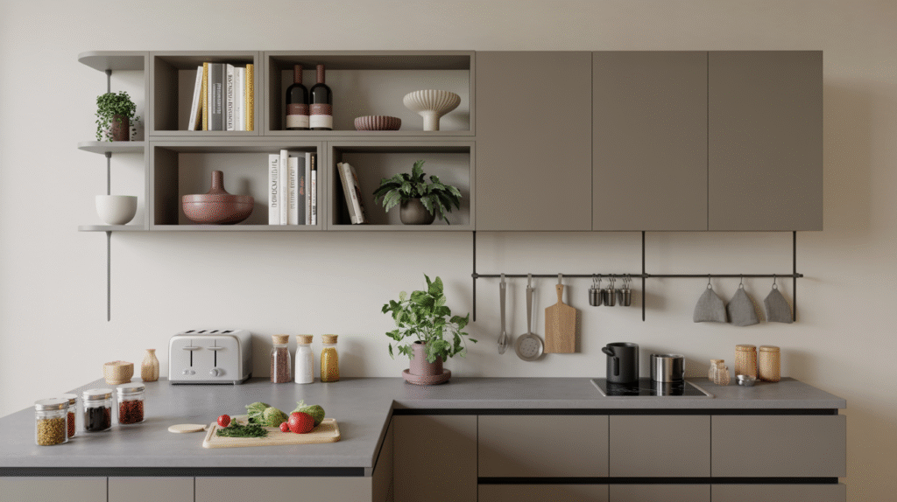
3. The G-Shaped Kitchen
The G-shape is the lesser-known sibling of the U-shape, essentially a U-shaped kitchen with an added peninsula, forming something closer to a G.
It maximizes nearly every inch of available space and works especially well when you want distinct zones for cooking, prepping, and socializing without constantly bumping into other people in the room.
The tradeoff is that it can feel enclosed if you're not careful. Balance it with good lighting and lighter cabinetry so it doesn't start to feel like a box.
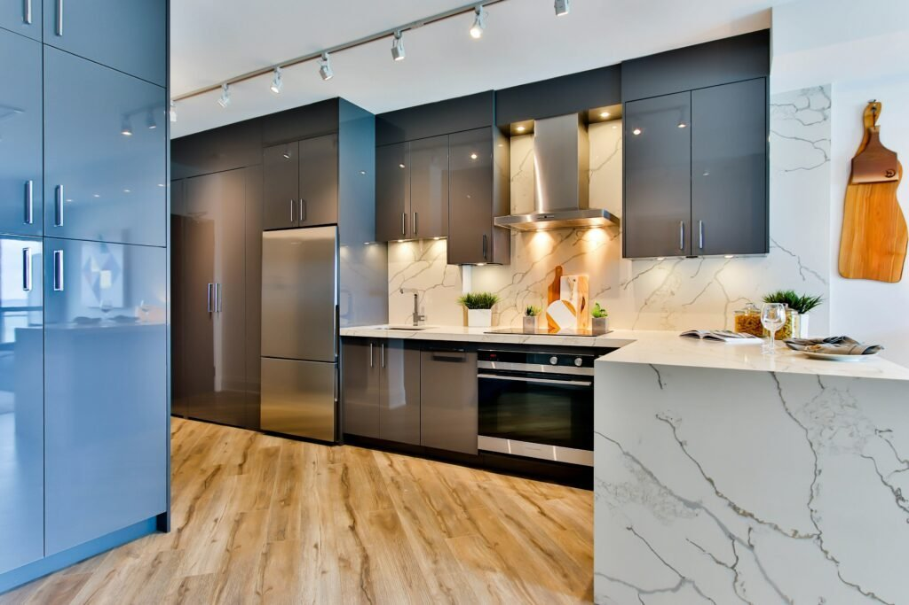
4. The Single-Wall Kitchen
For minimalists or anyone working with a genuinely compact footprint, the single-wall layout lines cabinets, counters, and appliances up neatly along one wall.
It can sound sparse on paper, but done well it reads sleek and surprisingly efficient, especially with tall cabinets and smart vertical storage doing the heavy lifting.
You won't get a sprawling prep zone out of it, but if your cooking style leans toward quick and simple rather than five-course production, this layout makes complete sense.
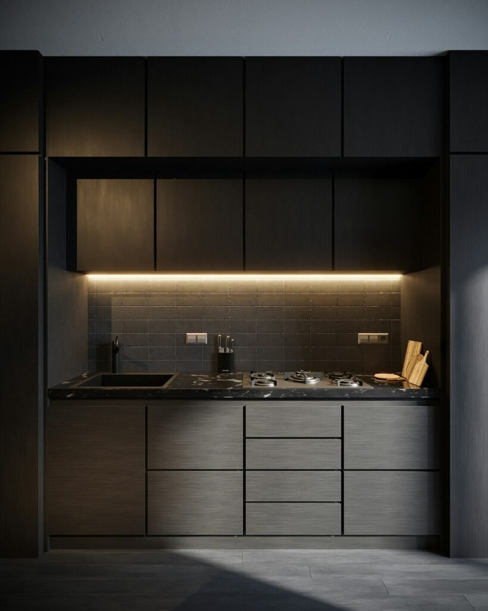
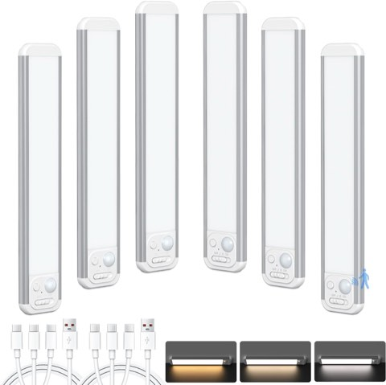
SECRUI 8.5 Inch Rechargeable Under Cabinet Lights, 6 Pack, Motion Sensor
Shop on Amazon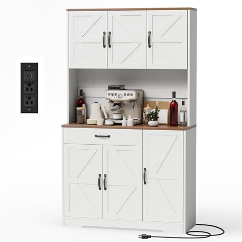
GRUSIGN 71 Inch Pantry Cabinet with Charging Station, Kitchen Hutch Storage
Shop on Amazon5. The Peninsula Kitchen
Think of the peninsula as the island's more practical cousin. Instead of standing free, it extends out from a wall or counter, like an island that stopped just short of full independence.
It's the move for homes that want the perks of an island (extra counter, storage, casual seating) without the floor space to support one. A peninsula works beautifully as a breakfast bar, a prep zone, or a soft divider between kitchen and living area.
The one thing to watch: keep it from becoming a clutter magnet. A peninsula works best as a bridge between spaces, not a wall that happens to be shorter.
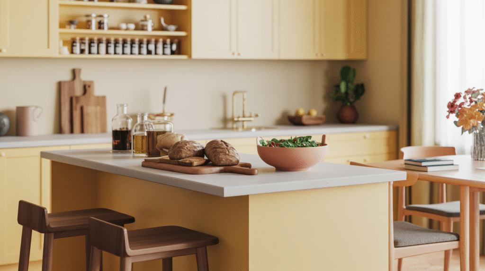
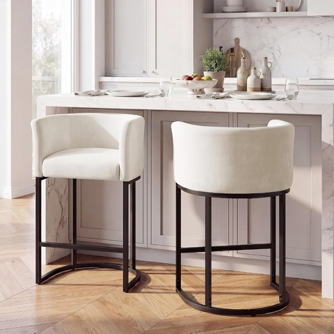
GRUSIGN Chenille Counter Height Bar Stools Set of 2, 26 Inch, with Arms and Footrest
Shop on Amazon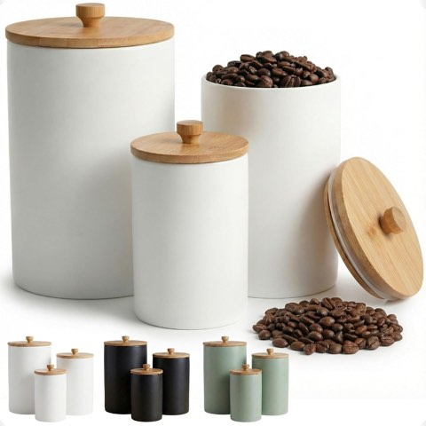
Ceramic Kitchen Canisters for Countertop, Set of 3, Airtight Bamboo Lids
Shop on Amazon6. The Open-Plan Kitchen
If one layout says "modern living" more than any other, it's open-plan. Walls come down and the kitchen merges directly into the dining or living space.
It might sound like a passing trend, but it isn't, people consistently want connection, and cooking while actually talking to the people around you beats being tucked behind a wall.
It's not for everyone. If dirty dishes tend to linger until "later," an open kitchen won't hide that the way a closed-off one would. But for anyone who likes blending cooking with entertaining, this layout holds up.
7. The Island Kitchen
The island layout earns its popularity honestly. Beyond the obvious extra counter and storage, it becomes a natural gathering spot, the place where kids do homework, guests linger with a drink, and dinner prep somehow happens all at once.
It works especially well in open-plan homes, where the island doubles as the visual anchor of the whole space.
One tip worth remembering: don't oversize it. An island that's too large starts to feel like a landing strip rather than a kitchen feature. Keep it proportional to the room.
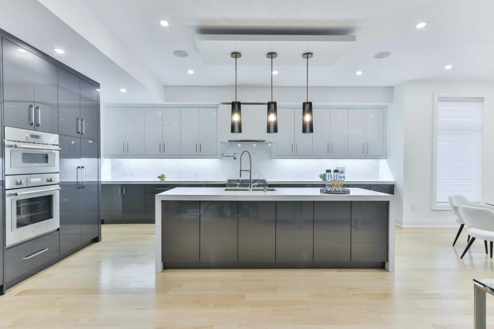
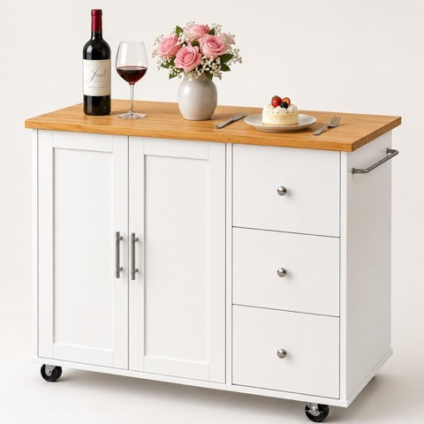
Mobile Kitchen Island on Wheels, Rolling Storage Cart with Drawers, White
Shop on Amazon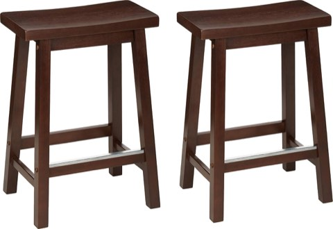
Amazon Basics Solid Wood Saddle-Seat Counter Height Bar Stools with Footrest, 24 Inch
Shop on Amazon8. The U-Shaped Kitchen
If the L-shape feels good, the U-shape takes it further. Picture three connected walls of cabinets and counter forming a U that essentially surrounds you while you cook, everything within easy reach, no wasted steps.
It's especially good for bigger families or serious home cooks, since you can chop, cook, and plate without moving far from any one spot.
It can feel like overkill in a small kitchen, but if you spend real hours in there experimenting with recipes, the U-shape feels close to ideal.
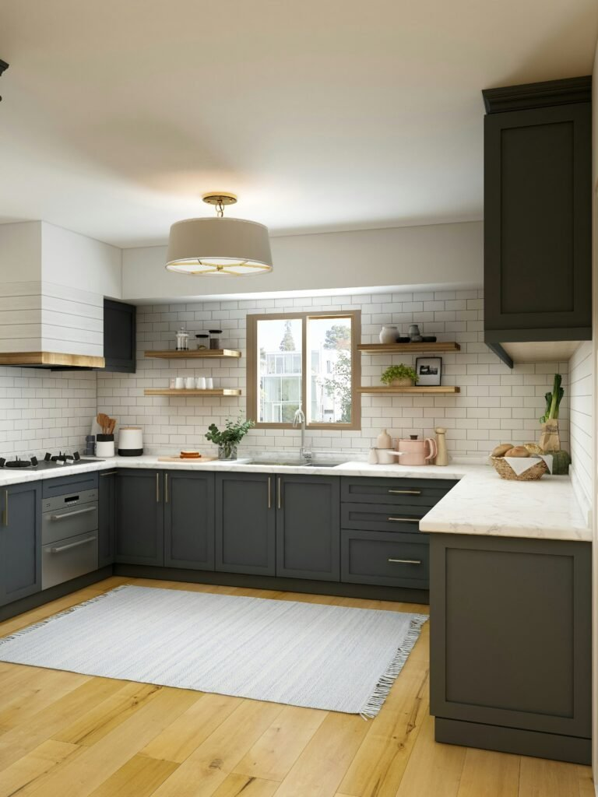
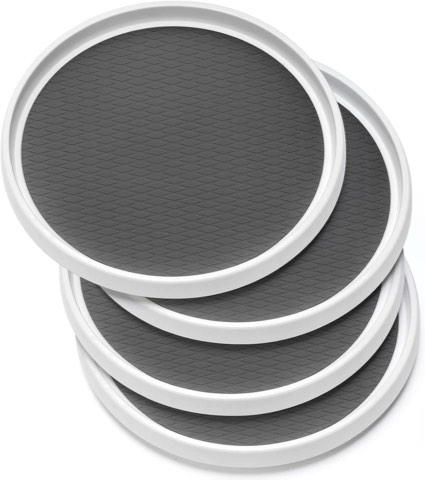
Non-Skid Lazy Susan Organizers, 10 Inch Turntable Rack for Cabinet, Set of 4
Shop on Amazon9. The L-Shaped Kitchen
For a little more breathing room, the L-shape is the classic go-to. It hugs two walls at a right angle and leaves the rest of the room open, which makes it a natural fit for families who want space without feeling boxed in.
That open corner creates a smooth flow between the fridge, sink, and stove, and it leaves enough room for a dining nook or even an island if the square footage allows.
It adapts to nearly any style, too, farmhouse, modern, whatever direction you're leaning, the L-shape works with it.
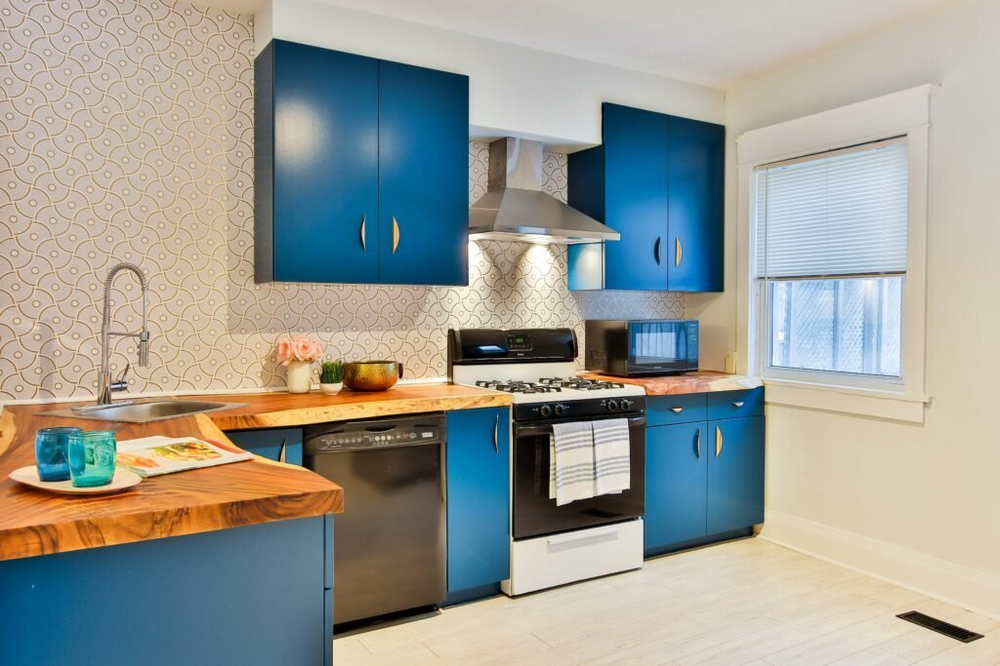
10. The Galley Kitchen
The galley layout is the unsung hero of small kitchens. It sounds a little old-school, but runs along two parallel walls to create a tight, corridor-style setup where everything stays within arm's reach.
That proximity is exactly what makes it so efficient to cook in, there's no wasted distance between the stove, the sink, and the counter. It fits perfectly into apartments and smaller homes where every inch counts.
You won't be hosting a crowd in a galley kitchen, but if you want function over flash, this layout quietly delivers more than it gets credit for.
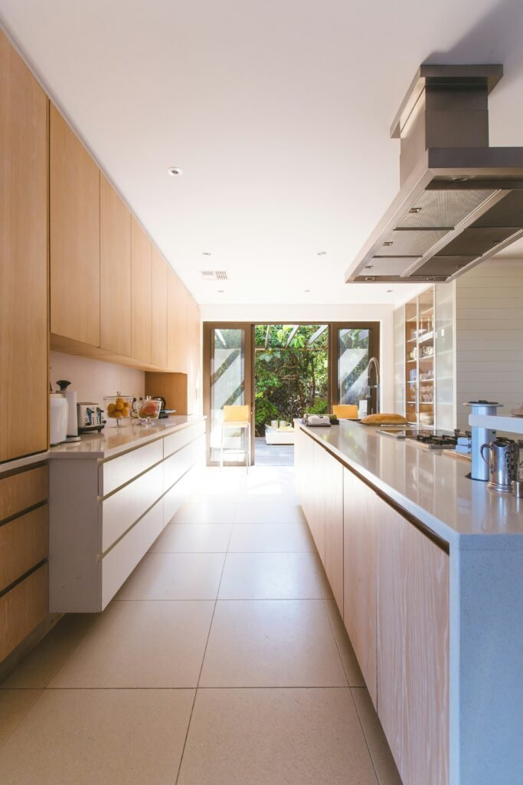
Style Is Not the Same Thing as Layout
People confuse these two constantly. You can build a farmhouse kitchen, a sleek modern one, or a cozy cottage version, but underneath all of it, the layout is the skeleton holding the whole design together.
Changing cabinet colors or swapping hardware is like getting a new haircut: fun, refreshing, easy to undo. Changing your layout is closer to surgery, something you want to get right the first time, because you're not doing it again anytime soon. That's exactly why the layout conversation should come before the styling one. Once the floor plan is settled, everything else becomes the easy part.
What Actually Makes a Layout Timeless
A timeless layout isn't about looking good in photos, it's about holding up to real functionality over years of actual use. The classic kitchen work triangle (fridge, sink, stove in reasonable proximity) still rules for a reason, and a good layout stays flexible enough to evolve, whether that means hosting dinner parties later or watching your kids claim the island as a homework desk.
Balance matters too. A kitchen can feel like an empty ballroom or a cluttered shoebox, and neither one lasts in anyone's favor. The layouts that stick around hit a genuine sweet spot between open and functional, because flow matters more than finishes. Countertop trends come and go, but the ability to move smoothly through your own kitchen never stops mattering.
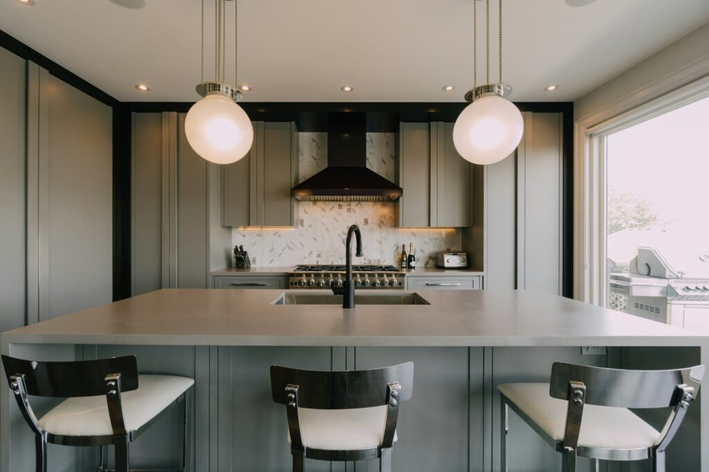
Final Thoughts
There's really no single "best" kitchen layout. The timelessness comes down to how well a given design matches your lifestyle, your actual square footage, and honestly your patience for cleanup after cooking.
From the tight efficiency of a galley kitchen to the flexibility of a zone-style design, each layout on this list earned its spot because it simply works. Styles shift constantly, remember when orange countertops were a thing? But a layout that genuinely makes your life easier never really goes out of style.
Ask yourself how you actually use your kitchen on a normal week: hosting often, cooking solo, managing a homework station for kids after school. Once that's genuinely clear, the right layout tends to become obvious on its own.